ADAPT：用解耦广告主画像支持个性化自动出价与免训练适配
- 原文：Auto-Bidding with Disentangled Advertiser Profiles and Train-Free Adaptation
- 作者：Songyue Cai、Shan Gu、Wei Chen、Ziru Xu、Lianyu Wang、Jian Xu、Xiaofeng Zhu。
- 机构：电子科技大学、阿里巴巴淘天集团、海南大学；第一作者工作在淘天实习期间完成。
- 论文入口：arXiv:2609.21308，v1 发布于 2026-09-18；精读日期 2026-09-22。
- 来源范围：原论文全部 17 页，包括主文与附录；本文数字均为作者在 AuctionNet 基准中的报告，不是独立复现。
- 代码状态：原文表示将于 ADAPT 仓库 发布；本次访问返回 404，尚不能认为代码已公开可用。
摘要提出的问题是：自动出价需要为广告主提供个性化策略，但从连续出价轨迹中提取纯净画像、同时表达跨广告主公共信息与个体私有信息，以及在不重新训练的条件下更新老广告主画像、适配新广告主，都仍然困难。ADAPT 用两阶段画像学习与决策学习处理这些问题，并把部署时的适配操作放到画像状态上。
1. 背景和问题
1.1 相同约束值不能完全描述广告主策略
自动出价处在一个具有时间耦合的资源分配过程里。当前时刻多买一些曝光，不只影响当下转化，还会改变剩余预算、后续可竞争的流量以及最终每次转化成本。广告主提供的预算和目标成本描述了可接受结果的一部分，却没有完全表达策略偏好。两个广告主即使使用相同的目标成本，也可能拥有不同的历史竞争环境、行业节奏和投放行为。作者希望从这些连续行为中提炼广告主画像，把它作为策略模型的条件，使共享模型在相似环境状态下仍能根据广告主背景产生不同动作。
这里的画像不等同于自然语言用户画像。推荐系统常用点击过的商品、关注主题或内容类别概括偏好，它们具有较直接的语义；竞价日志则主要是数值轨迹，状态、动作、成本、转化以及约束相互影响。某次高出价可能反映广告主积极拓量，也可能仅仅因为当时优质流量较贵。仅把动作均值当作个人偏好，容易把环境变化误认成长期策略；仅使用类别，则又会把同类广告主过度平均。ADAPT 的研究问题正是在这种观测混杂条件下，学习可被决策模型有效利用的紧凑表示。
论文首先沿用受预算与成本约束的曝光价值最大化设定。下面保留原文式（1）的结构，注意它是任务形式化，随后模型并没有逐步求解这个整数优化问题。
符号解释：$i$ 表示曝光机会，$o_i$ 表示是否赢得该机会，$v_i$ 是价值，$c_i$ 是花费，$B$ 是预算；$j$ 标记附加约束，$c_{ij}$ 与 $p_{ij}$ 分别构成该约束的成本和效果统计，$C_j$ 为上限。分母为零时需要实现上的定义，原式本身没有给出完整数值处理细节。预算约束限制总支出，比例约束控制单位效果的成本，二者会通过时间上的竞争共同影响行动。
原文引用既有研究给出对应的出价参数化形式，随后把在线控制转化为不断调整参数的序贯任务。这一步使动作生成可以与曝光价值预测分工，但不能理解为本文证明了任意真实拍卖环境下的全局最优性。
符号解释：$\lambda_0$ 是基础价值项的出价系数，$\lambda_j$ 是第 $j$ 个约束相关系数，$J$ 为约束数量，$R_t$ 是从时刻 $t$ 到终点 $T$ 的累计回报，$r_n$ 为单步奖励。原文状态包含剩余时间、剩余预算和历史统计，动作对应出价系数调整；实验数据的动作维度是一维，不能把一般形式中的多约束动作向量当作已被全面实验验证。
1.2 从轨迹条件策略走向可维护的个体记忆
离线强化学习通常通过价值函数学习长期收益，长周期、反馈稀疏和日志覆盖不足会使价值估计困难。决策 Transformer 则把回报目标、状态、动作交错组成序列，以历史行为监督生成动作。它减少了显式价值函数学习的依赖，却不自动保证跨广告主的差异能够被充分保留。历史窗口可能短于完整投放周期，模型也可能把类别与个体因素混在同一个隐状态中。广告主画像在这里承担跨窗口记忆的角色：即使本次输入只有短轨迹，也能读取从该广告主历史中学习的策略信息。
作者把问题进一步拆为提取、利用、更新三个环节。提取阶段若直接跟动作预测一起训练，画像可能过度适应动作标签而缺少稳定身份特征；利用阶段若只接入一个稠密向量，公共知识与个体差异可能互相遮蔽；更新阶段若每次新增周期都需要梯度训练，会产生部署成本和模型版本管理负担。这种分工解释了为什么论文使用两套 Transformer，而不是仅仅给既有模型添加一个可学习广告主编号。第一套模型负责从完整可观测历史中编码策略，第二套模型负责因果行动生成，二者有不同的信息可见性和损失函数。
“纯净画像”是作者对学习目标的描述，不能视为已经证明画像只包含广告主固有偏好。对比学习要求同一广告主轨迹与该广告主记忆匹配，但广告主身份也与预算范围、品类、市场条件等因素相关。编码器完全可能利用这些相关信息完成识别。论文的画像扰动、解耦消融与相似度分析能说明表示被模型使用且具有结构，却不能消除所有环境混杂，更不能从观察日志中自动识别广告主的因果意图。这一点决定了如何理解后文的公共、私有命名。
另一个需要提前澄清的词是免训练。模型训练完成后，老广告主仍需收集新周期轨迹，通过冻结编码器进行一次前向计算，再更新记忆；新广告主则读取已经学习过的类别表示和已有广告主的公共原型。没有梯度更新不等于没有数据依赖、没有前向成本，也不代表面对全新类别仍可直接泛化。实际服务还需知道何时允许写入画像、哪些统计在决策时可见、失败时如何回退，这些部署细节没有在本文中形成完整线上系统评测。
还有一项任务口径需要保留：作者以第二价格拍卖解释曝光成本，再把多个曝光聚合到一个决策时间步。单步奖励来自赢得曝光的累计价值，模型动作调节的是这一时间粒度的出价参数，而不是为每条曝光独立生成文本或新的价值预测。这种聚合降低了序列长度，也使广告主画像主要反映周期级投放行为，不能把实验直接解释为逐曝光细粒度竞价建模的全面替代。
因此，本文最值得检验的不是某个单点分数是否很高，而是两阶段学习是否得到互补表示、表示是否能在不同预算和稀疏度下改善决策，以及冻结模型后是否还可以通过状态更新获得收益。这三类证据强度不同：全数据基准说明同一评测体系内的竞争力，移除广告主训练数据的实验说明身份冷启动，留出投放周期的实验说明新增数据利用。它们不能互相替代，也不能直接推出线上流量、收益和成本指标的提升。
2. 方法
2.1 从历史轨迹提取广告主画像
第一阶段维护两类可训练表。静态表按类别存储嵌入，动态表按广告主存储个体向量，后者也称广告主记忆库。给定一个广告主，从历史投放轨迹中抽取长度为十的片段，把每一步的回报目标、状态、动作变成三个词元；再在前面加入聚合词元与类别画像。因为任务是总结一段已经观察到的轨迹，编码器使用双向注意力。它不是在线预测未来动作的模型，因此允许片段内部双向信息流是合理的；但新增周期适配时，只能编码当时已经完成并可获取的观测。
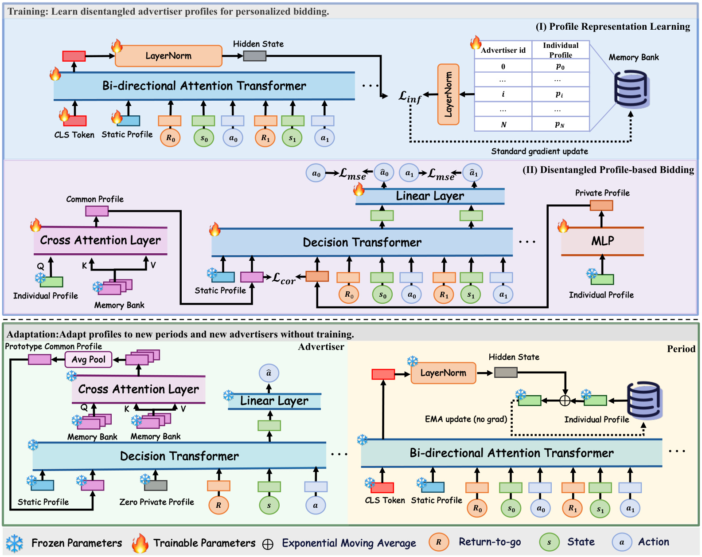
Figure 1 上方蓝色区域是画像提取阶段，火焰标记表示可训练参数，轨迹编码器和动态记忆表通过对比损失共同优化。中间紫色区域转向动作生成：冻结的类别与个体表示作为输入，交叉注意力从全体记忆中提取公共信息，另一条多层感知机支路保留个体信息，二者一起进入因果决策模型。下方绿色区域才是部署时的适配，并进一步分成新广告主和新周期两条路径。图中雪花的位置很重要：免训练发生在模型参数已固定的条件下，但右下角仍有指数移动平均写回个体记忆，因此系统状态并没有被冻结。
读图时还应区分两个看似相同的注意力操作。正常决策时，公共支路的查询是当前广告主的个体向量，键和值来自记忆库，因此每个广告主得到的公共表示可以不同；左下角的新广告主分支没有已学好的个体查询，先让记忆库参与公共表示计算，再平均得到原型。这个原型提供历史群体策略的先验，不能代表新广告主独有偏好。私有画像在冷启动时置零，也是对缺少个体证据的明确承认，而不是宣称公共向量可以恢复全部个人信息。
整张架构图揭示了论文的主要取舍：增加独立画像训练阶段，换取后续策略共享与状态更新的简洁性。动作模型仍然接受当前轨迹，它没有把所有决策压缩成三个静态前缀；画像和即时状态承担互补职责。图中从回报目标、状态到动作的箭头也意味着策略仍受日志动作监督，免训练更新没有引入额外在线奖励优化器。图示本身能确认数据流与参数冻结关系，却不能证明组件间已经统计独立，相关损失和消融实验才是下一步需要核对的证据。
符号解释：$s_c$ 是类别 $c$ 的静态画像，$e$ 是长度 $K$ 轨迹对应的 $3K$ 个词元嵌入，$d$ 为隐藏维度，$\mathrm{cls}$ 为可学习聚合词元，$T$ 是双向 Transformer，$T(x)_0$ 取首个词元隐状态，$h$ 是层归一化后的轨迹摘要。静态表大小为 $C\times d$，动态记忆库 $P$ 大小为 $N\times d$，分别对应类别数 $C$ 与广告主数 $N$。
符号解释：$p_i$ 是当前广告主在记忆库中的个体向量，$p_j$ 是第 $j$ 个广告主向量，$\tau$ 为温度，分子为身份匹配的正对，分母包含所有广告主候选。优化使同一广告主轨迹摘要接近对应记忆，并远离其他身份。层归一化不是单位长度归一化，不能未经推导把这里的点积直接等同于严格的余弦相似度。第一阶段学到的是类别表、记忆表与轨迹编码器，而非直接预测竞价动作。
2.2 把动态画像拆成公共与私有前缀
第二阶段冻结第一阶段得到的画像，建立两个具有不同信息来源的映射。公共分支让当前个体向量查询全部广告主记忆，以便在同一表示空间里提取可共享策略；私有分支只经过当前向量的多层感知机映射。公共信息不是所有人完全相同的常量，而是经由个体查询获得的共享知识组合。这允许两个广告主在利用同一群体经验时保留不同权重，不过注意力权重本身也不能直接解释为真实策略相似性的因果贡献。
符号解释：$p_{\mathrm{com}}$ 是公共画像，$p_{\mathrm{pri}}$ 是私有画像，两者都属于 $\mathbb R^d$；$Q$、$K$、$V$ 分别为查询、键、值，$P$ 是第一阶段学到的全体动态记忆。两条支路接收同一个个体来源，只有公共支路显式访问其他广告主，因此结构差异提供归纳偏置，但并不自动防止输出重复。
作者为减少重复信息增加相关损失。它在每个样本内部沿隐藏维做中心化，然后惩罚两个中心化向量的绝对相关程度，再在批次上平均。这与在一个批次里估计不同广告主的共同变化不是同一个统计量；也不同于最小化两个随机变量间完整互信息。准确理解计算轴，是复现这项方法最容易忽略的细节。
符号解释：这里 $B$ 是批大小，与任务公式里的预算符号同形但语义不同；$z$ 标记样本，$\operatorname{Cov}_d$ 和 $\operatorname{Var}_d$ 沿该样本的 $d$ 个隐藏坐标计算协方差与方差。绝对值同时惩罚正相关和负相关，目标是让表示方向互补。方差趋零时实现需数值保护，原文公式未列出稳定常数，因此复现不能擅自把某个常数称作作者配置。低线性相关也不保证非线性独立或因果解耦。
符号解释：$y$ 是带三个画像前缀的轨迹序列，长度为 $3+3K$；$\operatorname{Backbone}$ 是因果 Transformer，$H$ 为全部词元隐状态，$h_t^s$ 是时刻 $t$ 的状态词元隐状态，线性头输出动作预测 $\hat a_t$。因果掩码避免状态位置读取后面的真实动作，前缀则在所有后续时刻可见。这里只把每个状态位置映射到数值动作，并没有生成自然语言推理链。
符号解释：$a_t$ 为日志动作，$\hat a_t$ 为预测动作，$K$ 是训练片段长度，$\alpha$ 控制去相关正则与动作拟合的权衡。默认 $\alpha=1$，目标依然是条件行为拟合加表示约束，没有新增显式价值函数。两阶段分离减轻动作标签直接改造画像的压力，但画像质量仍取决于日志策略和身份监督；若日志策略系统性偏差，冻结画像也可能保留这种偏差。
2.3 冻结网络后的新周期与新广告主适配
老广告主出现新投放周期后，第一阶段编码器读入该周期轨迹得到新摘要，再按指数移动平均更新记忆。论文训练时片段长十步，适配时使用完整四十八步周期，说明更新信息尺度比训练片段更长。默认历史权重为百分之九十九，单次新摘要占百分之一，强调稳定而非骤然替换。不断更新会逐渐改变后续公共查询与私有映射输入，因而同一个冻结动作网络可以表现出随数据变化的决策。
符号解释：$e_{\mathrm{new}}$ 是已观察到的新周期轨迹嵌入，$h_{\mathrm{new}}$ 是冻结编码器输出，$p_i$ 为被更新的个体画像，$\lambda$ 是旧记忆保留率，默认 $0.99$。这是一条无梯度状态更新规则，不会训练网络权重。它也不直接优化最终投放分数，若新轨迹噪声较大或发生极端市场冲击，平滑能否及时响应需要额外实验，不能由公式自动保证。
新广告主则没有在训练记忆库中对应的向量。论文使用已知类别的静态画像，把已有广告主经公共分支得到的表示求平均作为公共原型，并将私有画像设为零。这里的均值作用于公共表示，而不是直接把所有原始个体向量求平均；两者先后顺序不同。推理仍接收新广告主当前可观察的轨迹词元，零样本指该广告主训练数据被留出，不是每个决策都不需要状态输入。
符号解释：$\bar p_{\mathrm{com}}$ 是群体公共原型，$\mathbf0\in\mathbb R^d$ 为零私有画像，$s_c$ 需要类别 $c$ 已有可用嵌入，$e$ 是推理轨迹。这个展开式对应原文式（13）和 Figure 1 的先交叉注意力再平均池化流程。它避免为每个新广告主重新训练，但只提供群体与类别先验；如何从零私有画像过渡到充分个性化、如何处理未知类别，论文没有给出完整实验路径。
两个适配分支都把网络参数稳定性与个体状态可塑性分开，这有助于缩小部署更新范围。不过全体记忆库同时参与公共注意力，某个广告主记忆变化也可能影响其他查询的结果，更新不一定完全局部；当广告主规模远大于实验中的四十八个时，记忆容量、注意力计算、缓存失效和版本一致性将变得重要。本文没有报告这些规模上的开销曲线，所以更适合把方法视作可验证的状态维护机制，而不是已经完成工业扩展性验收的服务架构。
3. 实验结果
3.1 数据、指标与训练协议
实验只在公开 AuctionNet 基准展开，分为转化反馈较密集和较稀疏两个版本。评价包括不施加额外成本惩罚的转化价值，以及对超目标成本情况进行惩罚的分数。这一区别使我们不能只看转化是否增加，还必须观察增加的转化是否以违反成本约束为代价。
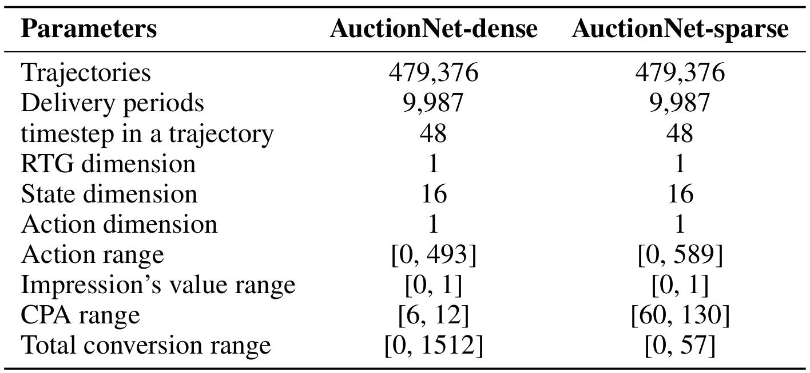
Table 6 给出每个版本四十七万九千三百七十六条轨迹、九千九百八十七个投放周期，每条轨迹四十八个时间步；正文说明涉及四十八个广告主。两版回报目标维度均为一，状态维度十六，动作维度一。由此可见，实验虽然使用真实广告问题启发的数值序列，控制接口仍相当紧凑，不能据此推断多维动作、大量业务约束和百万广告主环境下表现相同。轨迹数量恰好等于周期数乘广告主数，也提醒读者它不是四十多万个相互独立广告主样本，泛化单位与数据行数必须区分。
密集版动作范围为零到四百九十三，稀疏版为零到五百八十九；目标成本范围分别为六到十二、六十到一百三十。总转化范围分别到一千五百一十二和五十七，显示两种反馈稀疏度差异明显。两个版本的原始分数绝对值不宜直接横向比较，后文主表分别在各版本内部对比基线。曝光价值都在零到一之间，转化指标由价值累计得到，名称虽然写成转化次数，阅读时仍应按基准的数值定义理解，避免擅自换算成平台真实成交量。
十六维状态由剩余时间、剩余预算、历史及最近三步出价均值、最低获胜成本均值、预测价值均值、转化均值、获胜率以及当前和历史曝光数量等组成。这些统计让策略同时看到资源进度和局部市场变化，但并不包含可解释的广告主自然语言需求。论文主文称每个周期有超过五十万曝光机会，附录叙述略有简化；本笔记只按作者口径记录，不从表中的轨迹数反推曝光总量。由于未提供跨平台数据，当前证据主要支持同一竞价基准上的改进，迁移到另一拍卖机制仍需重新验证。
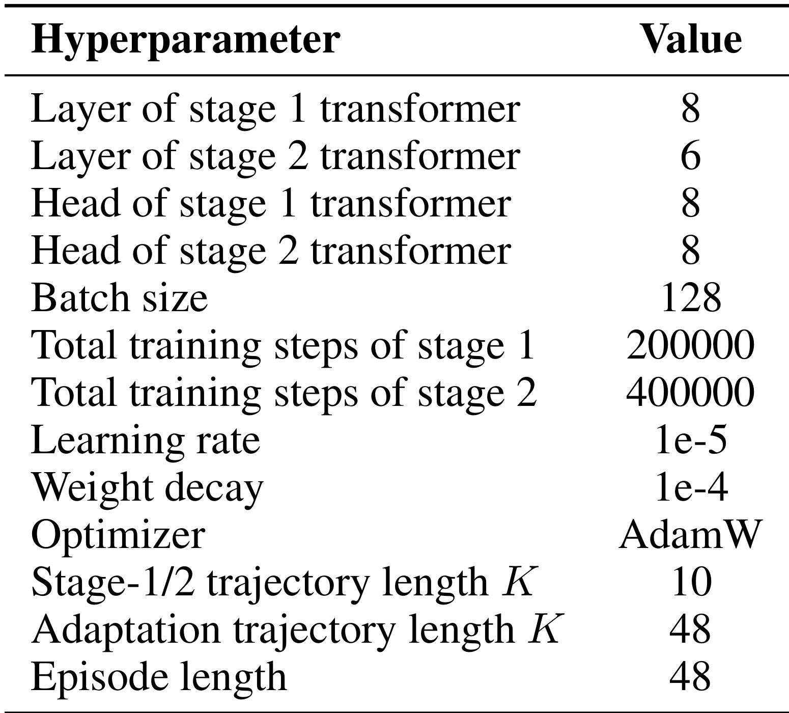
Table 7 把两套网络的规模与训练预算分开列出。画像编码器八层，动作模型六层，两者都是八个注意力头；批大小一百二十八，画像阶段训练二十万步，动作阶段训练四十万步，优化器为 AdamW，学习率为十的负五次方，权重衰减为十的负四次方。论文没有在这张表中提供完整参数量、训练硬件、耗时和峰值显存，因此不能把网络层数当作计算成本的充分描述。与只训练一个决策 Transformer 相比，多出来的画像阶段是实际投入，免训练部署不能抵消或隐藏这部分离线成本。
训练两个阶段都抽取十步轨迹窗口，而适配窗口和完整投放周期都是四十八步。这会带来一个值得复现时检查的分布差异：编码器在短片段上学习身份辨别，却在适配时总结更长序列。位置编码如何支持这一长度、不同窗口是否重叠、回报目标如何缩放，都可能影响重现结果。原文配置足以确定基本实验骨架，但缺失的细节需要代码发布后核实，不能用读者习惯中的默认实现代替作者未说明的设置。
这组超参数还帮助解释为何“免训练”应放在适配阶段限定。新广告主和新周期实验并未继续执行这二十万或四十万步优化，而是复用固定编码器和决策网络；它证明一种更新方式在实验内有效，并没有直接测量线上节省多少算力。对于公平基线，训练总步数、数据遍历次数和调参预算是否一致会影响结论强度。论文报告了多个强基线成绩，但未在此表给出各方法完全匹配的成本，因此效果优势与成本优势应该分开陈述，后者仍属于缺少直接测量的部分。
符号解释：$\rho$ 是实际与目标每次转化成本之比，$\sum_i o_i v_i$ 是累计转化价值；达到或优于目标时惩罚因子为一，超目标时按平方倒数降低得分。这个评测函数鼓励收益与成本同时改善，但并非硬保证每个周期都满足约束，也不能由均值分数倒推出约束违例率。
3.2 不同预算和反馈稀疏度的主结果
主实验涵盖四种离线强化学习方法与五种生成式出价方法，预算缩放为原预算的百分之五十、七十五、一百、一百二十五和一百五十。对照重点应放在每个设置里的最强可比基线，而不是只挑表现很弱的方法制造大幅提升印象。
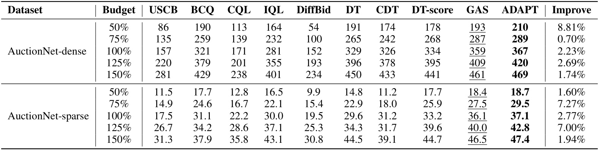
Table 1 中 ADAPT 在十个设置的分数都为最高。密集版标准预算下，最强基线 GAS 为三百五十九，ADAPT 为三百六十七，相对提升百分之二点二三；稀疏版对应三十六点一与三十七点一，相对提升百分之二点七七。作者同时提到相对 DiffBid 的巨大百分比差异，但该方法在本表表现明显更弱，用它作为标题收益会夸大对当前强方法的增量。对工程选型更有价值的是，加入画像机制后在原有最强生成式方法附近还能取得多少稳定改善。
预算敏感性并非一条简单单调规律。密集版五档相对最强基线收益分别约百分之八点八一、零点七零、二点二三、二点六九、一点七四；稀疏版分别约一点六零、七点二七、二点七七、七点零零、一点九四。紧预算并不总是收益最高，稀疏反馈也不在每个预算点都带来更大相对增益。画像可能帮助模型根据历史策略调整资源使用，但表中只有最终结果，没有进一步分解预算耗尽时刻、成本违例或不同流量段的决策，因此机制解释应保持为与方法一致的合理推测。
这张表给出的是约束惩罚后的分数，而不是广告主收入、平台收入或线上成本稳定率。小幅收益是否超出随机波动，仍需要多随机种子、置信区间和配对检验；表中没有显示误差条，百分之零点七的差距尤其不宜解释为稳健优势已经确定。十个设置一致领先比单点领先更有说服力，但这些设置共用数据来源、模型和评测过程，也不是十个完全独立的外部复现。结论应限定为作者报告的基准竞争力，而非线上部署后收益的确定预期。
3.3 类别画像与动态画像是否互补
第一组消融从有没有画像开始，保持决策任务不变，比较去掉全部前缀、只保留类别信息、只保留动态信息以及完整方案。它回答的是输入信息源是否有用，而不是解耦操作本身是否有效。
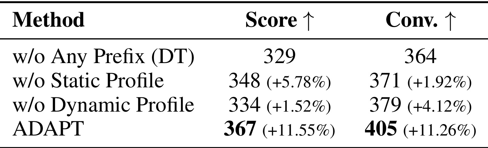
Table 2 的无画像版本就是该实验中的决策 Transformer，分数三百二十九，转化三百六十四。去掉静态画像意味着仅使用动态画像，此时分数三百四十八、转化三百七十一；去掉动态画像意味着只使用类别静态画像，分数三百三十四、转化三百七十九。完整方法达到三百六十七和四百零五，分别相对无画像版本提高百分之十一点五五与十一点二六。表里括号百分比的共同分母是无画像行，不能把每行理解为接续上一行的累计提升。
两类画像对两个指标的作用并不相同。动态信息单独带来的分数收益更大，类别信息单独带来的转化收益反而更高，说明它们可能影响不同的收益与成本平衡。因为分数是带成本惩罚的价值，较多转化并不自动对应较高分数。完整模型同时提高两项指标，与类别先验和个体历史互补的设计动机一致，不过表里没有逐广告主分布，无法确认收益是否平均分散，还是少量广告主贡献了大部分增量。
消融还应注意前缀条件之外的结构差异。完整动态画像包含公共与私有两条支路，删除一类输入会改变模型所能利用的上下文；这说明相应信息在该实现下有帮助，却不足以单独排除参数量、训练难度或随机种子的影响。更细致的验证可以用等参数随机前缀、打乱身份但保留分布等对照，其中论文附录提供了推理阶段打乱实验，能进一步支持“画像携带具体身份信息”的解释。两个证据组合起来比只看完整方法最高一行更可靠，但仍不等于识别了广告主真实偏好的全部内容。
3.4 公共与私有画像的解耦收益
在确定画像有用之后，论文再比较直接使用原始个体画像与分别使用公共、私有分支。这个问题对应第二阶段的结构设计：同样有个体记忆时，把信息拆开是否比让决策模型隐式理解单个向量更有效。
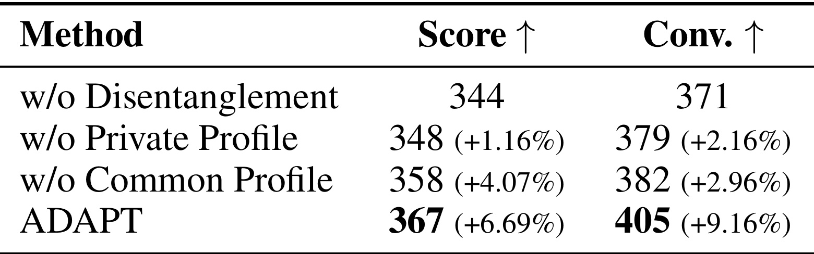
Table 3 的不解耦版本分数三百四十四、转化三百七十一。去掉私有画像、只留公共分支时，分数三百四十八、转化三百七十九；去掉公共画像、只留私有分支时，分数三百五十八、转化三百八十二。两者同时使用的完整模型达到三百六十七和四百零五，相对不解耦版本提高百分之六点六九和九点一六。两个单分支都优于直接使用个体向量，且共同使用进一步改善，支持所设计映射与组合对决策有帮助。
私有分支单独的分数更高，不意味着公共知识无用。公共分支可能提供更稳定的群体先验，私有分支则保留当前广告主的特异模式；完整模型可以在不同状态下利用二者，因果 Transformer 并没有固定要求每一步等权使用。相反，如果把两支简单合并为一个平均向量，就会丢失它们作为独立前缀的接口差异。这里的证据指向“分支与条件输入有效”，但没有单独量化交叉注意力、额外多层感知机、前缀数量和相关正则各自的全部贡献。
尤其需要避免将消融成绩直接翻译为语义独立性的证明。模型可以从两个低相关的向量中恢复同一事实，也可以让不同坐标表示同一环境因素，线性去相关不能禁止这些情况。作者通过表示相似度进一步呈现公共与私有的几何差异，但那些结果仍是同一训练产物上的诊断。若要证明两支分别稳定承担共享规律和个体偏好，需要跨环境替换、控制类别与预算后的干预，以及观察画像交换时决策是否按预期改变。本文提出了清晰可检验的结构假设，现有实验证据支持其效用，但语义命名应保留这层认识边界。
3.5 新广告主与新周期适配
新广告主实验从不同类别随机选取广告主，把这些广告主的所有数据从两阶段训练中移除，再在它们上面测试。类别仍有已有表示，因此这是身份留出而非全新行业留出。决策 Transformer 在同样的数据排除条件下训练和评测。
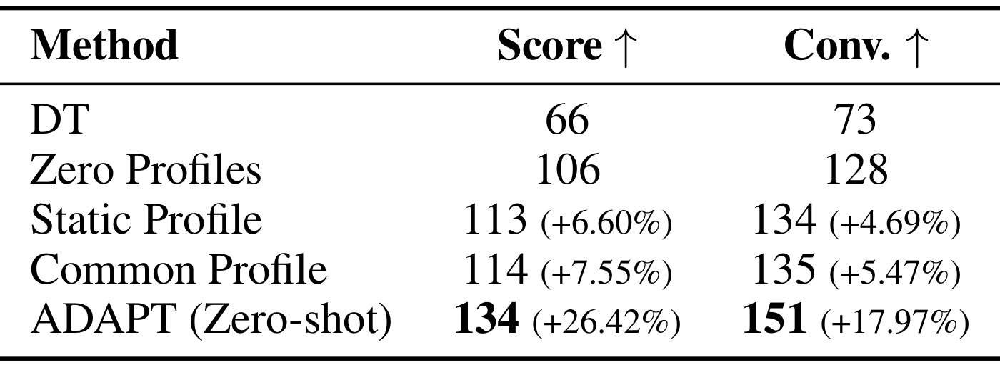
Table 4 的决策 Transformer 分数为六十六、转化七十三；同一 ADAPT 架构在零画像条件下已经达到一百零六和一百二十八。这意味着不能把完整方法对决策 Transformer 的全部差距都归因于冷启动画像，架构或训练方式的其他差异已经贡献了明显基线变化。作者使用零画像行作为括号百分比的参照：只给静态画像为一百一十三和一百三十四，只给公共画像为一百一十四和一百三十五，完整零样本设计为一百三十四和一百五十一。
完整设计相对零画像的分数提升百分之二十六点四二，转化提升百分之十七点九七，才是这张消融表最直接对应画像适配的增益口径。静态与公共各自的小幅收益合并后出现更大提升，说明类别先验与群体策略在当前实现里可以互补。私有画像仍然为零，因此这不是已经从新广告主历史提取个性化信息的结果；模型利用的是训练群体和该广告主类别提供的起点。对完全未知类别、异常预算规模或新拍卖机制的泛化，表中没有提供答案。
实验说明了留出广告主和平均评测的设计，但没有在主表列出被留出广告主的数量、逐身份方差以及多个随机划分的区间。少量广告主的随机选择可能影响群体原型与测试难度，复现时应固定并公开身份划分。还要核对评测所需的目标回报、状态标准化和任何初始化统计都只来自允许数据，防止冷启动条件被无意削弱。本文并未展示真实线上新广告主接入后的学习曲线，因此这一结果应称为离线零样本身份泛化，而不是商业冷启动转化增长的直接测量。
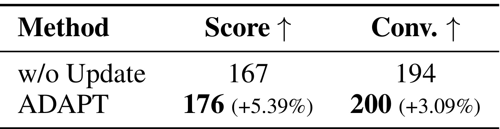
Table 5 针对已有广告主，将五百个投放周期从训练中留出，再把这些周期当作新观察用于画像更新，模型参数保持冻结。没有更新的版本分数一百六十七、转化一百九十四；使用指数移动平均后为一百七十六和二百，分别提高百分之五点三九与三点零九。这与新广告主实验不同：身份在历史记忆中已有位置，更新规则试图把新周期的信息写入原有个体向量，而不是从群体原型冷启动。
这项实验为“固定网络后仍能利用新数据”提供了直接证据，但还不能单凭一个均值表判断长期动态适应能力。默认每次只写入百分之一的新摘要，连续周期更新后才逐渐改变历史记忆；若市场变化很快，这个平滑程度可能响应较慢，若新数据噪声较大则可能更稳。论文没有报告不同更新率、突变强度与周期数量的完整交叉曲线，所以不能据此把默认系数当作普遍最优。新画像来自冻结编码器，其表达能力也受原训练分布约束，超出分布的策略未必能被正确总结。
原文描述将留出周期用于更新，但没有在这一小表中详细展开“用于更新的数据截止时间”与“用于计算收益的后续数据”之间的完整时间关系。实际复现和部署必须进一步核对，保证决策只读取当时已经可观测的轨迹，不能用一个周期结束后的摘要反过来改善同一周期尚未发生的动作。这是对实验协议需要补充的信息要求，并非认定作者发生了泄漏。只有把更新时刻、评测时刻和数据流写清楚，才能判断这百分之五点三九究竟对应怎样的实际服务流程，以及它与线上持续状态维护的距离。
3.6 画像扰动与相关损失权重
前面的消融重新训练不同版本，附录进一步固定模型参数，仅在推理时破坏画像，以检验前缀是否只是冗余占位符。这个干预能帮助区分“多几个词元就有效”和“词元中具体身份信息有效”。
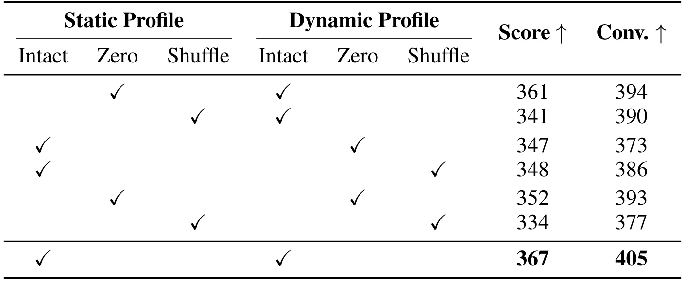
Table 8 分别将静态或动态画像置零、随机分配给另一广告主，或同时打乱两种画像。完整输入的分数三百六十七、转化四百零五；将静态画像置零为三百六十一和三百九十四，将静态画像打乱为三百四十一和三百九十；动态画像置零为三百四十七和三百七十三，打乱为三百四十八和三百八十六；两类都打乱时分数降到三百三十四，转化三百七十七。保留原表的勾选矩阵很有必要，否则纯文本转录很容易把置零与打乱组合对应错行。
错误的类别画像比分别移除类别画像造成更大分数下降，表明提供一个看似合法却属于别人类别的先验可能误导策略。这与条件生成模型依赖上下文的行为一致：缺失信息可以被其他输入部分补偿，错误信息则可能触发不适合当前广告主的行动。动态画像置零和打乱对转化与分数的影响也不完全相同，再次说明成本惩罚改变了指标排序，不能只用一个转化数字判断画像质量。所有扰动都低于完整输入，支持画像内容在当前模型中被实际使用。
不过这种推理扰动会制造训练时很少出现的输入组合，因此性能下降也可能包含分布外输入效应。它证明模型依赖这些表示，却不能独自证明依赖的是人类命名的“策略偏好”而非广告主身份关联的其他统计。更加严格的语义验证可以在同类别、同预算范围内交换画像，减少明显分布破坏，再观察动作改变与共享或个体因素是否一致。表中还缺少多次随机打乱的误差范围，因此各扰动之间几分的小差异不宜过度排序；较稳妥的结论是完整且匹配身份的表示明显更有利。
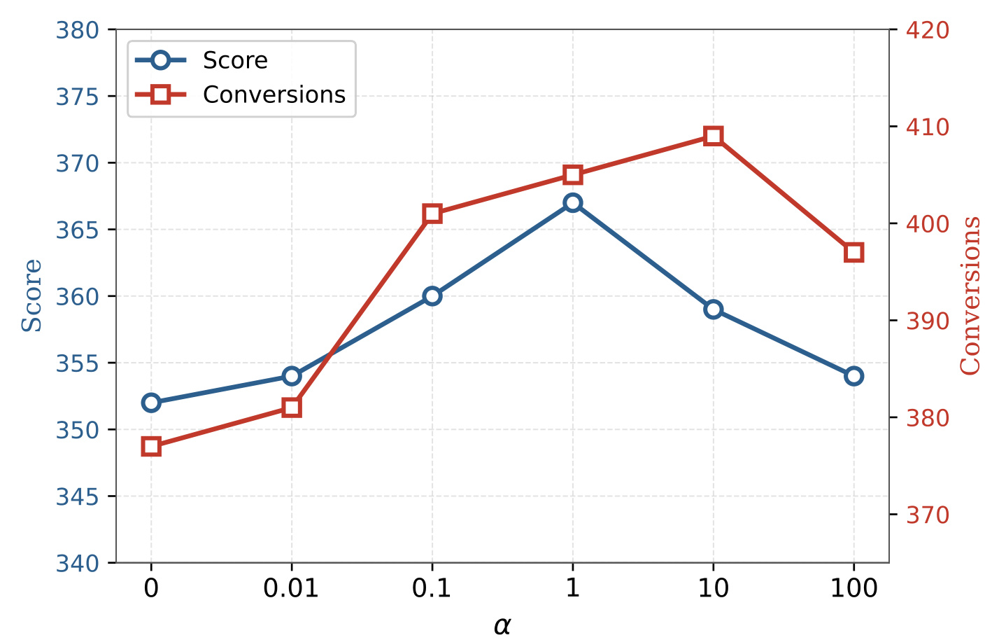
Figure 2 横轴为相关损失权重，从零到一百，蓝线对应左轴约束分数，红线对应右轴转化值。去掉相关损失时分数约三百五十二，加入适度权重后改善，在权重一时达到最高分数三百六十七，继续增大到十或一百时分数回落。转化曲线的最高位置与分数曲线不同，权重十时转化更高，但受成本惩罚后的分数没有相应最高。这是本文多处指标分歧中一个直观例子，也解释了为什么作者按约束分数选择默认配置。
这条曲线支持去相关正则在一定范围内有帮助，过强则会影响动作拟合。两个目标使用同一组公共与私有支路，正则过大时可能迫使表示为了几何正交而舍弃对动作有用的共享成分；这是一种与优化形式相符的解释，图本身没有直接测量信息损失。作者强调零点一、一和十附近仍表现较好，但不能由单张曲线推出对任意数据集、隐藏维度和损失尺度都不敏感，因为动作数值的缩放就会改变均方误差与相关损失的相对强度。
图中没有误差条，也没有各权重对应的多个种子分布，所以相邻点的差距应视为作者单套实验的观察。横轴虽然按几个跨数量级取值排列，还包括零，不应按连续等距数值轴推断变化斜率。两条线使用不同纵轴范围，视觉上相交不代表两个指标数值相等，红线较陡也不表示收益改善比蓝线更大。正确用途是观察不同权重下同一指标内部的方向与折中，再结合真实成本约束决定评价优先级，而不是用曲线形状替代约束分析。
3.7 表示几何与语义证据
论文最后分析三类画像是否呈现预期的几何结构。先用二维投影展示分布，再看原始向量的余弦相似度矩阵，最后汇总类内类间统计。三层证据各有作用，也各有不能跨越的解释边界。
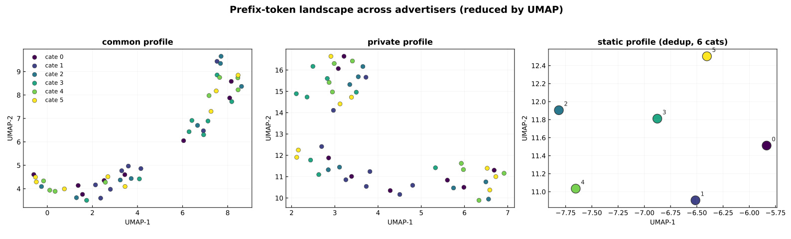
Figure 3 左侧是公共画像，中间是私有画像，右侧是去重后六个类别的静态画像；颜色表示类别。公共画像在投影中呈现比较连续的群体结构，私有画像较为分散，静态画像则明确区分类别。作者把这些现象解释为公共支路学习共享出价规律、私有支路保留广告主差异、静态支路提供类别先验。这种可视化与设计目标一致，能帮助读者理解三类输入不只是名称不同的同一向量，但二维形状本身不能量化对决策的实际贡献。
三个子图使用不同坐标范围，不能拿不同子图里点的位置直接计算公共与私有画像之间的距离。即使使用同一种降维方法，投影结果也受邻域参数、随机初始化和原始尺度影响，二维的远近不等价于高维信息独立。右侧静态图只有六个点，是因为同类别共享一条嵌入，去重后自然只剩类别数量；类别分开在很大程度上也来自建表方式，不应当作模型发现了全新的行业知识。读者应把这幅图作为表示诊断的入口，再通过下一幅原空间相似度图核实方向。
同样，公共表示在不同类别间混合不代表它已经完全去除了类别因素，私有表示分散也不能证明每个点对应可解释偏好。信息可能以非线性方式藏在局部坐标组合里，二维图难以检出。若要将这些画像用于人工干预，例如按某一维控制激进程度，需要建立向量变化与可观测出价行为之间的关系，本文没有提供这种语义轴标定。因此图的合理结论是三种表示具有不同的分布外观，并为后续相似度统计提供可视线索，而不是已经得到可直接编辑的广告主策略词典。
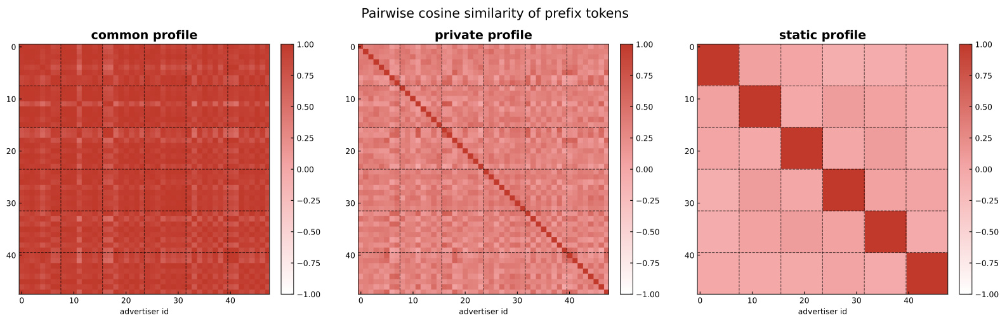
Figure 4 回到高维表示，对各广告主之间的画像计算两两余弦相似度。公共画像矩阵大面积高相似，私有画像对角线较强而非对角区域更低，静态画像出现清晰类别块。对角线表示一个向量与自身比较，通常接近一，不能把它本身当作个性化能力证据；有意义的是不同广告主之间的相似度如何分布。公共支路即使使用不同查询，也可能选择相似的群体模式，因此高非对角相似与方法设计是相容的。
私有矩阵低于公共矩阵说明它保留了更多跨广告主差异，但私有向量之间仍不是严格正交，颜色也并非全部趋近零。相关损失约束的是每个样本内部公共与私有向量的中心化相关程度，并没有直接要求不同广告主的私有画像互不相似，所以不能把图中结构当作对损失公式的逐项验证。静态矩阵类内块状高相似则来自同类别共享同一嵌入，这是一项模型设定带来的结构性结果。它与动态分支不同，不必通过行为学习才会出现。
三个矩阵的色标均展示余弦尺度，但视觉颜色会隐藏细小数值差异，因此下一张统计表更适合判断平均水平。还需要注意广告主排序：若同类别相邻，静态块状会很清楚，排序变化则可能把同样的信息打散，图形外观不是独立的收益证明。对于部署诊断，矩阵可以用于发现画像塌缩或异常身份复用，例如所有私有向量突然完全相同；本文没有报告长期更新后的矩阵变化，所以不能据此确认指数移动平均多次写入后仍保持同样分离程度。这是后续验证状态维护是否稳定的一个具体方向。
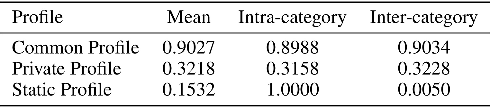
Table 9 给出公共画像平均相似度零点九零二七，类内零点八九八八，类间零点九零三四；私有画像平均零点三二一八，类内零点三一五八，类间零点三二二八。公共支路明显更接近共享表示，私有支路保留更多身份差异，而且两支类内与类间统计十分接近。作者据此认为动态支路中的类别特定信息较有限。这个说法可以作为线性相似度层面的观察，却不能扩展为已经严格去除所有类别信息，仍需要分类探针或互信息等额外检验。
静态画像平均相似度零点一五三二，类内为一，类间零点零零五。类内等于一是同类别共享向量的直接后果，并非额外训练奇迹；类间接近零则表明不同类别在该表示空间的方向差异较大。平均值还依赖广告主类别分布、是否纳入自身比较及统计加权方式，不能只用一个平均数判定信息量。私有画像平均相似度较低也不意味着比公共画像“更好”，两者分别服务不同目的，实际效用需要回到前面的消融结果判断。
把这张表与主结果连起来，较稳健的证据链是：三类表示具有预期方向上的几何差别，破坏身份匹配会降低性能，删除任一类信息也会损失收益，因此当前表示分工在实验中有效。较强但尚未被充分证明的命题则是这些向量已经对应纯粹、独立和稳定的真实策略因素。后续最有价值的工作不是继续增加一张更漂亮的降维图，而是检测跨周期、跨预算和跨类别迁移时，几何结构是否仍然存在，错误画像会导致何种动作偏差，以及这些偏差能否被简单的状态监控及时发现。
4. 总结
ADAPT 的主要贡献是给自动出价中的个体信息建立了一个明确生命周期：先用身份对比学习从历史轨迹提取记忆，再用公共与私有分支把记忆转换为策略模型的条件，最后在冻结网络时通过均值原型和指数移动平均分别处理新身份与新周期。这个思路把共享参数更新与个体状态更新分开，使个性化不必等价于每个广告主单独微调。论文的有效性证据也相对完整，既有两种反馈稀疏度与五种预算的主结果，也有输入类型、解耦、冷启动、周期更新和推理扰动消融。
现有证据最扎实的表述是，作者在 AuctionNet 中报告完整方法在十个预算设置均领先所列基线，标准预算下相对最强基线的分数改善约百分之二到三；静态与动态画像、公共与私有分支都表现出互补性。新广告主实验的完整零样本设计相对零画像架构提高分数百分之二十六点四二，新周期更新相对不更新提高百分之五点三九。它们使用不同子集和参照，不能相加成一个总体收益，也不能当作线上广告系统的已确认增长。
方法的局限来自几处具体假设。身份对比学习可能保留与身份相关的环境混杂；相关损失只约束每个样本沿隐藏维的线性相关，不保证因果独立；新广告主需要已知类别表示，零私有画像不提供真正个体化历史；新周期更新需要足够可观测轨迹，且更新数据与评测数据的时间界限需进一步核对。实验只有四十八个广告主和紧凑数值状态，没有证明全体记忆注意力在大规模服务中的时延、内存和更新一致性。代码入口本次仍不可用，也使关键实现细节暂时不能独立核验。
若开展复现，首先应固定广告主留出划分与周期时间切分，明确每一次画像读写对应的数据截止时间；其次对照相同训练预算，确认提升并非额外网络或优化步数带来的差异；再分别测试相关损失计算轴、动作归一化、长短窗口切换以及均值原型的计算顺序。相比直接追求更大的完整模型，这些检查更能定位收益究竟来自可复用的画像机制还是实现和数据协议。多种子误差、逐广告主收益分布与成本违例率也应一起报告，防止均值改善掩盖尾部风险。
对于后续研究，最有意义的是沿状态维护而非单纯扩大参数量推进。可以观察不同记忆更新率在稳定期和突变期的取舍，测试何时需要回退到群体原型，分析错误类别和异常周期如何传播到公共注意力；还可以将记忆库限制在相关邻居内，研究近似检索对共享策略的影响。这些都是由论文结构自然导出的研究问题，本文尚未验证，不能写成已有功能。尤其在公共分支访问全体记忆的情况下，局部画像更新可能产生跨广告主影响，需要评估系统整体行为而非只检查被更新个体。
因此，这篇论文适合作为个性化出价的表示与适配机制参考。它提供了清楚的模块、可复核的公式和相互衔接的消融，说明在现有序列决策模型之上显式管理广告主画像具有研究价值；同时，实际投放仍需跨时间、跨环境和线上控制实验补足证据。把离线基准收益、画像几何诊断与工业部署承诺分开，才能既保留这一方法的启发，也避免把免梯度更新误读为无需数据、无需成本、无需验证的通用适配能力。